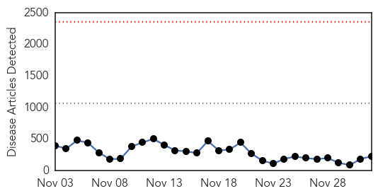
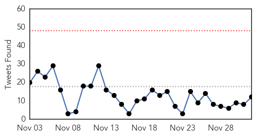
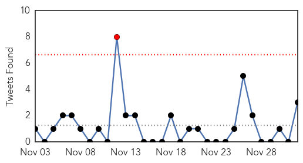

Ebola
30-Day Web Trend
0 alerts, 0 warnings

30-Day Twitter Trend
4 alerts, 0 warnings

Article Locations

Article Confidences
Top Articles:
- 1.000
- White House on Ebola preparation: 'Tremendous progress' as more hospitals equipped to handle virus
- 1.000
- New York hospital’s staff finish 21 days of monitoring after treating the city’s Ebola case
- 1.000
- 35 Facilities Designated for Ebola Treatment in U.S.
- 1.000
- Ebola in West Africa: WHO succeeds in isolation and safe burial of 70% of Ebola victims
- 1.000
- 1000 New Ebola Deaths in Just 2 Days in West Africa
- 1.000
- UN: Work remains on Ebola goals
- 1.000
- Can South Africa handle an ebola outbreak?
- 1.000
- CDC Approves New Ebola Treatment Centers
- 1.000
- WHO will miss Ebola targets it set for Dec 1
- 1.000
- Spain officially free of Ebola
- 1.000
- Possible Ebola patient admitted to Boston hospital for evaluation
- 1.000
- 35 U.S. hospitals designated as Ebola treatment centers
- 1.000
- 35 US Hospitals are Designated as Ebola Treatment Centers
- 1.000
- Ebola Response Update
- 1.000
- 13 Numbers That Show The Ebola Outbreak Is Far From Over
- 1.000
- Canada to send military health staff to Sierra Leone
- 1.000
- This Is How Much the U.S. Has Accomplished in Ebola Preparedness in Only Two Months
- 1.000
- WHO declares end of Ebola outbreak in Sierra Leone, but neighbor Guinea struggles to end virus
- 1.000
- Connecticut Hospitals Have Spent $5 Million to Prepare for Ebola
- 1.000
- The Ebola quarantine conundrum - let reason prevail: Christine Link (opinion)
- 1.000
- MSF pushes for more agile, hands-on approach to Ebola battle
- 1.000
- Ebola cases: Liberia in decline, Guinea stable, Sierra Leone increasing
- 1.000
- Fears of further Ebola spread as death toll climbs to 7,000
- 1.000
- Multiple Suspected Ebola Cases Surface In Pakistan
- 1.000
- Obama urges investment in Ebola response, vaccines
- 1.000
- Suspected case of Ebola emerges in Islamabad
- 1.000
- 35 hospitals selected as Ebola Treatment Centers in US with more to come
- 1.000
- Man cleared of Ebola suspicion at PIMS
- 1.000
- WHO: More than 17,000 people infected with Ebola
- 0.999
- Health-system resilience: reflections on the Ebola crisis in western Africa
- 0.999
- U.S. designates 35 hospitals to treat Ebola patients
- 0.999
- CDC: 35 hospitals can treat Ebola
- 0.999
- U.S. designates 35 hospitals as Ebola centers
- 0.999
- Spain officially free of Ebola: WHO
- 0.999
- Observer
- 0.999
- Massachusetts General Hospital Treating Possible Ebola Patient
- 0.999
- Targets being met against ‘stupid’ Ebola, claims WHO
- 0.999
- WHO congratulates Spain on ending Ebola transmission
- 0.999
- Mich. hospitals don’t make Ebola treatment center list
- 0.999
- General Health Systems Damaged by Ebola in West Africa
- 0.999
- Ebola infected passenger was sent home from ER
- 0.999
- Spain declared free of Ebola virus by WHO
- 0.999
- U.S. Designates 35 Hospitals Capable of Ebola Treatment
- 0.999
- General Health Systems Damaged by Ebola in West Africa
- 0.999
- Emory among 35 hospitals designated as Ebola centers
- 0.999
- Unnecessary panic: First Ebola suspect a false alarm
- 0.999
- White House claims progress in Ebola fight
- 0.999
- Targets being met against 'stupid' Ebola, claims WHO -
- 0.998
- Area hospitals, emergency workers train for Ebola
- 0.998
- Ebola Outbreak Response Now Mismatched With Needs
Showing top 50 articles...
Top Tweets:
- 0.982
- Liberia, Guinée, Sierra Leone : où en est la lutte contre Ebola ? http://t.co/YvuW6bbyrS
- 0.978
- RT: @AfricaStopEbola Ebola: Sierra Leone, la solidarité pour éradiquer le virus https://t.co/igAW96GZv6
- 0.931
- Pakistan: Suspected Ebola patient admitted to PIMS http://t.co/ycZ3XaEqZV Ebola
- 0.925
- AFD Blog `@CDCgov: Ebola Hospital Preparedness & Designated Ebola Treatment Centers' http://t.co/a16haqOBs6
- 0.904
- Tracing the Ebola outbreak | @bbcafrica http://t.co/74dE7PLjjo
- 0.898
- Year in Risk 2014 http://t.co/WgzYcNaYnC Ebola outbreak among events that shaped 2014 EbolaResponse Ebola
- 0.894
- UN was fairly optimistic in Monday's ebola presser, Freetown. Privately, UN ppl bemoan lack of co-ord in ebola response. UN is coordinator.
- 0.890
- Many Ebola cases don't get investigated in Sierra Leone because there's no point. http://t.co/ETt6Jr8Mcd
- 0.854
- Ebola numbers update from: 17124 cases, 6062 deaths. The outbreak is approaching a year old and is far from over.
- 0.827
- WHO says Sierra Leone prognosis 'very good' against Ebola http://t.co/tK5slUwSVx
- 0.810
- 83% of travelers coming from countries affected by Ebola live within 200 miles of U.S. Ebola treatment. http://t.co/VLcN2hu29W
- 0.770
- RT: Useful MOOC for WestAfricans. Free & based on WHO advice - Understanding the Ebola Virus and How You Can Avoid It http://…
- 0.727
- RT: .@PopSci reports declared Nigeria Ebola free in October, thanks to efforts in place to endpolio. Read more: http://t…
- 0.707
- Does Ebola mutate while infecting people? Are some strains more deadly than others? Virus detectives on the case: http://t.co/PxgKAmZuvt
- 0.697
- RT: Ebola: An eyewitness account from Sierra Leone http://t.co/sRNPRj1mRL
- 0.695
- RT: Meet Milos, a Serbian nurse at's Ebola Treatment Center in Sierra Leone. | https://t.co/iHLdV33rnp | via @…
- 0.660
- RT: Despite missing its target on burials, World Health Organization confident it can catch up with Ebola. http://t.co/ByKjUgDcmW.
- 0.640
- Non-conventional humanitarian interventions on Ebola crisis in West Africa: health, ethics and legal implications http://t.co/YjRTJ5ZhLW
- 0.623
- Report. Update on the Economic Impact of the 2014 Ebola Epidemic on Liberia, Sierra Leone, and Guinea http://t.co/Xt3XurkQ9k
- 0.595
- For the inside scoop on Ebola in Sierra Leone, read Les Roberts' blog. E.g., this post on epidemiological data: http://t.co/3cJ4NEmYj7
- 0.594
- America has stopped paying attention, but Ebola is still ravaging Sierra Leone http://t.co/WNEjkkCY9p
- 0.585
- RT: [ALJAZEERA] Ebola in retreat in eastern Sierra Leone http://t.co/n5ZbSyHwpa EbolaNews
- 0.575
- SierraLeone Life on the Ebola frontline: 'Fear is overpowering even the health workers' http://t.co/2bFUBqIiDD
- 0.575
- Positive results spur race for Ebola vaccine http://t.co/plpei0nFz3
- 0.573
- World's Ebola response slow, patchy and inadequate, @MSF says http://t.co/i5e3GtDdny
- 0.552
- 1,000 Liberia deaths mistakenly added to Ebola death toll, or the trouble with accurate data collection http://t.co/qDdLKzhMl3
- 0.545
- Tell us how you are helping victims and families of Ebola in West Africa. GivingTuesday GivingIsMyStyle ElbowOutEbola
- 0.527
- 35 US hospitals have been deemed to be capable of handling Ebola cases, based on capacity, training & resources. http://t.co/hkw8gf5cVL
- 0.518
- UN&39;s Ebola success linked to surge in malaria deaths http://t.co/lAJ7OgZ6PV
- 0.509
- Personal Protective Equipment in the Context of Filovirus Disease Outbreak Response ebola PPE who http://t.co/uGCjSIRimg
- 0.508
- RT: CDC list of Ebola treatment centers (35) http://t.co/GbpjWYH06C surprised none in MA considering strong I.D. staff…
- 0.508
- More HCWs needed, MSF says MT: International Ebola response still slow, risks being a double failure. http://t.co/NQEgMd5Ur5
- 0.507
- Good news: Sierra Leonean MD recovers from Ebola. http://t.co/JXeBk0kDhL
Unknown
30-Day Web Trend
1 alerts, 0 warnings

30-Day Twitter Trend
1 alerts, 0 warnings

Article Locations

Article Confidences
Top Articles:
- 0.966
- Flu increasing at a rate of 10% per week in Central Texas
- 0.960
- CDC: Link between polio-like illness and EV-D68 looks likely
- 0.960
- Urgent Cares see big uptick in flu cases
- 0.953
- The Powell River Peak > Archives > News > Briefly
- 0.917
- Chicago Tribune
- 0.917
- Chicago Tribune
- 0.917
- Chicago Tribune
- 0.917
- Chicago Tribune
- 0.917
- Chicago Tribune
- 0.917
- Chicago Tribune
- 0.917
- Chicago Tribune
- 0.917
- Chicago Tribune
- 0.917
- Chicago Tribune
- 0.917
- Chicago Tribune
- 0.917
- Chicago Tribune
- 0.917
- Chicago Tribune
- 0.917
- Chicago Tribune
- 0.917
- Chicago Tribune
- 0.917
- Chicago Tribune
- 0.917
- Chicago Tribune
- 0.917
- Chicago Tribune
- 0.917
- Chicago Tribune
- 0.917
- Chicago Tribune
- 0.917
- Chicago Tribune
- 0.917
- Chicago Tribune
- 0.910
- The world windows to Thailand
- 0.894
- Monkey Fever: Tribals Give Vaccination Cold Shoulder
- 0.866
- NATO, Ukraine condemn Russian military build-up in Crimea
- 0.861
- After severe asthma and paralysis, enterovirus d-68 has gone away — but its mysteries remain
- 0.813
- St. Louis Co. Health Officials: Flu has arrived
- 0.806
- Taiwan raises H7N9 travel ...｜Society｜WCT
- 0.789
- Citizens advised to take preventive measures against seasonal diseases
- 0.758
- 87 per cent unaware of HIV+ status, may be infecting others
- 0.731
- Poland and Lithuania Report ASF Wild Boar Deaths
- 0.722
- Malaria deaths in South Africa climb
- 0.688
- Around 3,750 HIV/AIDS cases in LebanonHealthcare
- 0.682
- Thousands of birds dead after avian flu reported on two B.C. farms
- 0.648
- SGGP English Edition- Medical workers asked to focus on treating snakebite victims
- 0.635
- Study Finds That Virus May Eventually Become 'Almost Harmless'
- 0.621
- LatAm marks advances against AIDS, announces measures for access to treatment
- 0.586
- Albania registers 75 new cases of AIDS in 2014
- 0.573
- Making it easier and cheaper to control cervical cancer
- 0.549
- Latin America Marks Advances against AIDS, Announces Measures for Access to Treatment
- 0.546
- World AIDS Day: HIV cases increasing in R.I.
- 0.545
- Video: Europe is Palestinians ‘only hope for a two-state solution’
- 0.545
- Death toll in Syria conflict ‘rises above 200,000’
- 0.545
- Lebanon detains IS group leader’s wife and child
- 0.545
- Kenya security chiefs ousted after new al Shabaab attack
- 0.545
- Is the woman detained in Lebanon Baghdadi’s wife?
- 0.545
- France-India Rafale jet fighter deal back on track
Showing top 50 articles...
Top Tweets:
- 0.857
- Flu vaccination can reduce flu illnesses, doctors' visits, and missed work due to flu. Getafluvax today. http://t.co/cWLFiHHDMy
- 0.801
- DÃa buenoo acabo de sacar A en el fucking examen ... 🎉🎉🎉🎉🎉🎉
- 0.617
- GAR update on 18 MERS cases, 4 deaths in KSA during November. Half of the cases had contact with camels. http://t.co/5GWRAdaF2e
- 0.588
- RT: Pregnant? You're at high risk for flu complications. Seek medical care quickly if you think you have the flu http://t.c…
- 0.507
- H5 bird flu virus found on farms in B.C.'s Fraser Valley. This part of the province has had several large bird flu outbreaks in the past.